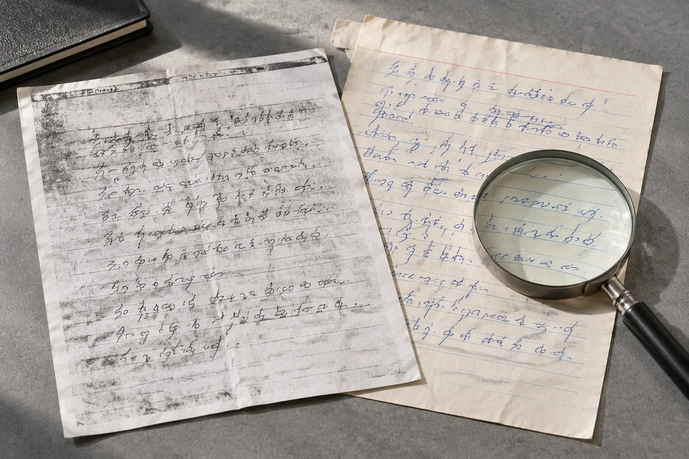

南京笔迹鉴定材料经过传真，细笔画为什么容易缺失
传真件便于传递页面内容，但线条细节可能与原稿不同。看见断线或粘连时，先确认文件经历过哪些复制环节。

复制链条需要交代
南京笔迹鉴定资料有时来自传真后复印，再经手机拍照。每个环节都可能改变浅线和边缘，最后得到的图片未必能显示原来的笔锋。先记录已知来源，无法确定的复制步骤不要补猜。页面内容可读，与细笔画保存充分是两件不同的事。
观察范围随材料条件变化
模仿笔迹参考使用传真图时，整页布局可能仍能辨认，局部起收笔却未必可靠。可以分别记录哪些特征看得清楚，哪些已受复制影响。自动增强只能调整现有像素，不会重新获得原件细节，不宜把处理后的锐利边缘当成原来的墨线。
姓名连接处单独核对
模仿签名、模仿签字的连线常集中在很小范围，二值化可能使相邻笔画粘在一起。保留整页传真件，再寻找对应原件照片或首次扫描。局部图片必须说明来源，不从另一份相似署名里移入线条来补足当前材料。
新旧版本建立关系
补到更清楚版本时，核对是否确为同一页，再更新目录。旧图仍可以保留副本关系，不把同一次书写的不同版本算成多个独立样本。版本说明越清楚，后续就越容易区分图像变化和书写本身的差别。